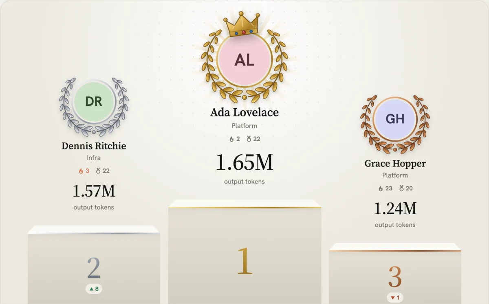
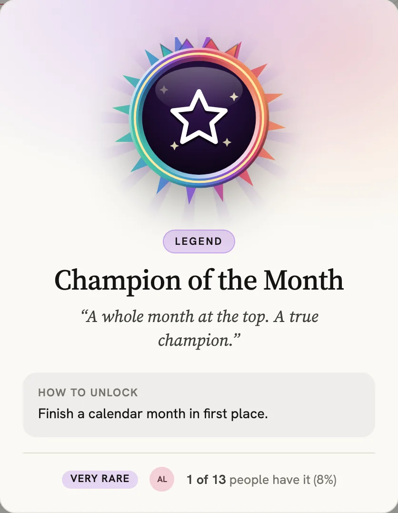
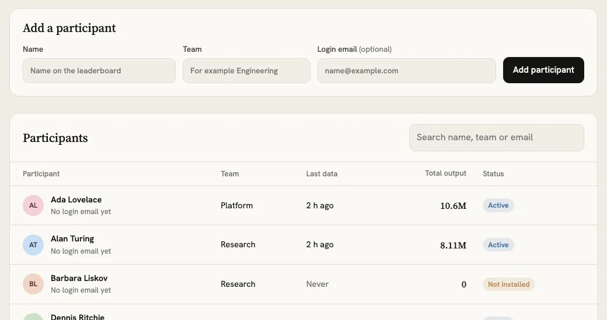
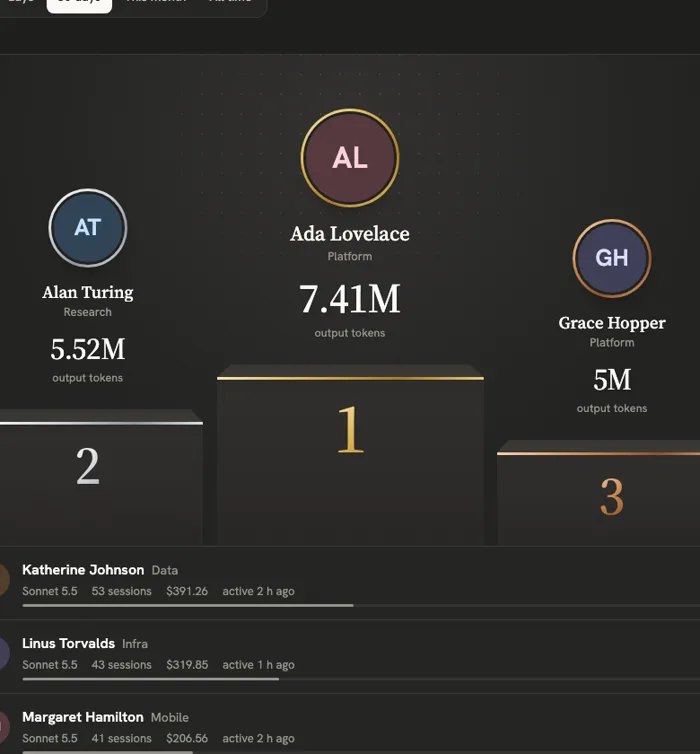

Crowns the leader of each period
First place wears a gold crown and laurels, second and third get silver and bronze, and a flame counts each person's days in a row.

Each laptop's Claude Code, or its 9router, JRouter, Hermes Agent, OpenCode or OpenRouter, sends token counts to one Python file you run. Everyone keeps their own account, and the board ranks output tokens live.
Free and MIT licensed. Needs Python 3.10 or newer and nothing from pip.
Pick today, 7 days, 30 days, this month or all time, or one harness. The page checks for new usage every second, arrows show who moved since yesterday, and side panels list who is active now. A click on a name opens that person's card.
Read the READMEFirst place wears a gold crown and laurels, second and third get silver and bronze, and a flame counts each person's days in a row.

Bronze to legend, from a first million tokens to a month in first place. Each badge opens a card with how to earn it and who has it.

Claude Code has OpenTelemetry metrics built in: the installer adds a few env keys to ~/.claude/settings.json. For 9router, JRouter, Hermes Agent, OpenCode and OpenRouter, a small Node script reads their own usage log every minute.
Token counts, model names, estimated cost, session counts and active time leave each laptop. Prompts, code and file names stay on it.
between metric sends
5 s
of history at install
30 days
totals per person
1 h
Pick the harness each person uses and it writes their install message. Rename people, rotate tokens or remove one computer's history.

It follows the system setting until someone picks light or dark.

English or Indonesian: set LB_LANG to en or id.
People upload their own picture, with a crop and zoom step.
One Python file on the standard library, SQLite storage and no build step. Keep it up with systemd, Docker's restart policy, or run.sh from cron.
For private access, Cloudflare Tunnel and Access need no open ports, and people log in with their work email. Without Cloudflare, an admin passphrase and a secret viewer link do the job.
Read the Cloudflare guideTo try it with made-up data first, run python3 manage.py demo on an empty database.
No. It works when everyone uses their own personal Claude account. You need no shared organization and no admin API key.
No. Claude Code and the five harnesses count; the desktop chat and claude.ai do not show up.
Yes, with their own token. It is a friendly leaderboard, not billing.
It is the estimate Claude Code or the harness logs, at API prices. People on a subscription pay their plan, so read the figure as a guide.
Nothing. It is MIT licensed and runs on your own server.
Most badges count all history. The 18 season badges count only from the day the season starts.
No. python3 server.py runs it on Python 3.10 or newer; Docker Compose is one option.
Yes, through PowerShell. That installer is tested less than the macOS and Linux one, so bug reports help.
Set LB_ADMIN_KEY to a long random string, then run it. The board opens on port 8790.
Open /admin, add a participant, pick their harness and copy the command it shows.
Each person runs their command once in a terminal. Claude Code users restart it; harness users are done.